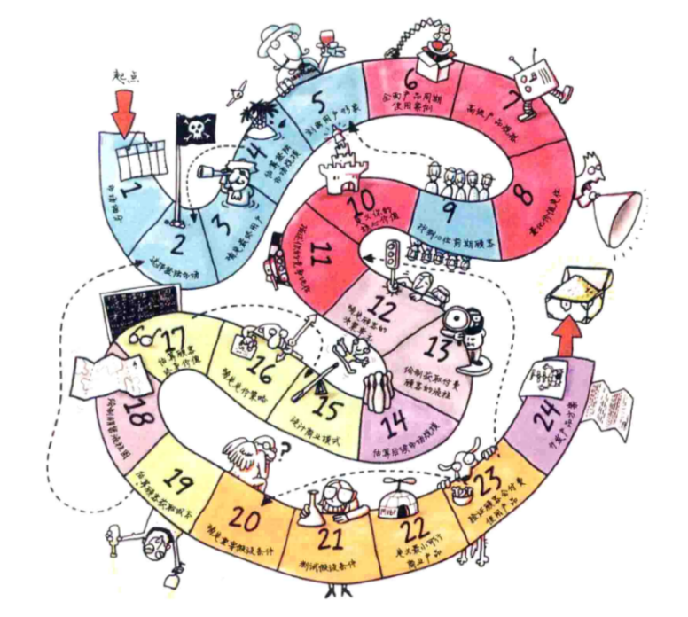
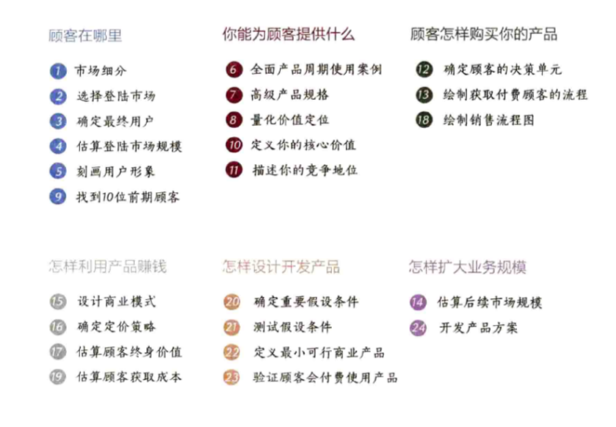

- 创业指的是开创别人未曾经营过的新业务.
- 创新 = 发明创造 X 商业化  
市场细分
充分必要条件
商业成功的唯一充分必要条件是付费顾客
建立可以控制的新市场
对初创企业来说,开发现有市场无法提供的创新产品是取得成功的重要条件.通过
创立新市场,即使无法垄断,你也能在市场中占据很高的份额,然后在此基础上进
行业务扩张.
付费顾客可能带来的问题
你应当精打细算,把有限资源应用到你能控制的,经过精挑细选和严格定义的新市
场中.
复杂的顾客: 第一类顾客,第二类顾客和双边市场
有以下两种情况会顾客复杂化:
- 一是商业模式需要第一类顾客(最终用户)和第二类顾客(经济型买方)的同时参 与才能赚钱
- 二是双边或多边情况,在这里你需要维护多个目标顾客群体才能实现业务.
如何进行市场细分
- 集思广益,列举出潜在的顾客群体和市场
- 把目标缩小到其中最有前景的6~12个市场
- 针对这6~12个市场搜集调查资料
选择登陆市场
如何选择登陆市场
最好不要选择最大或较大的市场,哪怕它们看起来成功的希望最高.你要进入的第
一个市场具有重要的学习意义,你应当选择一个规模较小的市场快速占领份额,让
潜在顾客熟悉你 ...